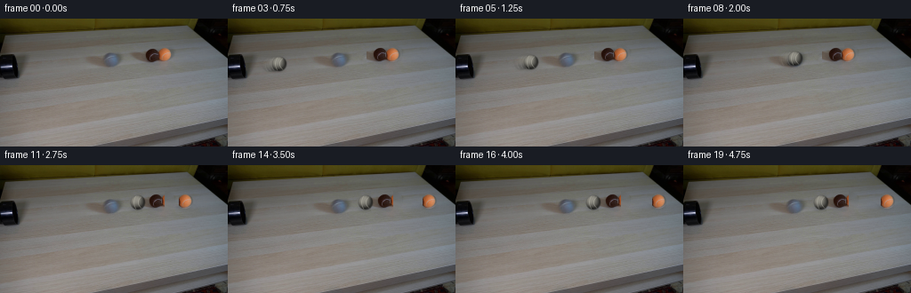
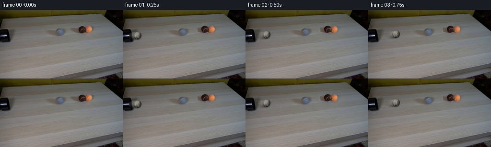

CODING AGENTS AS PIXEL WORLD MODELS
traex/DeepSeek-V4.1-Flash · 0028
点击播放 · 原生 RGB 像素
逐轮保存的候选
回放视频、检查图与代码变化。
每份候选均可单独播放。实际图片检查记录在下方工具轨迹中。
候选 01播放与检查图
点击播放 · 原生 RGB 像素


展开代码变化
--- 上一保存版本
+++ 本次保存版本
@@ -0,0 +1,223 @@
+from pathlib import Path
+
+import cv2
+import numpy as np
+from PIL import Image
+
+import artifact_io
+
+
+W, H, N = 256, 144, 20
+FRAME0 = np.asarray(Image.open("first_frame.png").convert("RGB"), dtype=np.uint8)
+
+
+def smoothstep(edge0, edge1, values):
+ values = np.clip((values - edge0) / (edge1 - edge0), 0.0, 1.0)
+ return values * values * (3.0 - 2.0 * values)
+
+
+def make_clean_plate(frame):
+ """Remove the two small colored balls and their soft cast shadows."""
+ yy, xx = np.mgrid[:H, :W]
+ region = (xx >= 145) & (xx < 197) & (yy >= 29) & (yy < 54)
+
+ rgb = frame.astype(np.int16)
+ warm = (rgb[:, :, 0] - rgb[:, :, 2] > 9) & (
+ rgb[:, :, 0] - rgb[:, :, 1] > 2
+ )
+ disk_brown = (xx - 168.7) ** 2 + (yy - 41.0) ** 2 < 10.2**2
+ disk_orange = (xx - 184.8) ** 2 + (yy - 40.1) ** 2 < 10.2**2
+ mask = region & (warm | disk_brown | disk_orange)
+ mask = cv2.dilate(mask.astype(np.uint8), np.ones((3, 3), np.uint8), iterations=1)
+
+ plate = cv2.inpaint(frame, mask, 3.2, cv2.INPAINT_TELEA)
+
+ # Put back a little high-frequency table texture so the repair is not glassy.
+ source = frame[29:54, 112:164].astype(np.float32)
+ low = cv2.GaussianBlur(source, (0, 0), 1.8)
+ residual = source - low
+ target = plate.astype(np.float32)
+ texture_weight = mask.astype(np.float32)[..., None] * 0.20
+ target[29:54, 145:197] += residual * texture_weight[29:54, 145:197]
+ plate = np.clip(target, 0, 255).astype(np.uint8)
+ return plate
+
+
+def extract_ball(frame, cx, cy, radius, side):
+ """Extract a round sprite while keeping the source image's soft lighting."""
+ pad = 12
+ x0, x1 = int(cx) - pad, int(cx) + pad + 1
+ y0, y1 = int(cy) - pad, int(cy) + pad + 1
+ yy, xx = np.mgrid[y0:y1, x0:x1]
+ dist = np.hypot(xx - cx, yy - cy)
+ alpha = 1.0 - smoothstep(radius - 0.7, radius + 0.9, dist)
+ alpha *= 1.0 - smoothstep(radius - 0.2, radius + 1.2, dist)
+
+ if side == "brown":
+ alpha *= smoothstep(176.0, 177.2, xx)
+ alpha = 1.0 - alpha
+ else:
+ alpha *= smoothstep(177.0, 178.0, xx)
+
+ color = frame[y0:y1, x0:x1].astype(np.float32)
+ return color, alpha.astype(np.float32), (x0, y0)
+
+
+def make_gray_ball(radius=8.3):
+ """Procedural, lightly fuzzy gray tennis ball with a subtle seam."""
+ scale = 4
+ size = int(np.ceil((radius + 2.0) * 2 * scale))
+ yy, xx = np.mgrid[:size, :size].astype(np.float32)
+ center = (size - 1) * 0.5
+ nx = (xx - center) / (radius * scale)
+ ny = (yy - center) / (radius * scale)
+ rr2 = nx * nx + ny * ny
+ inside = rr2 <= 1.0
+ nz = np.sqrt(np.clip(1.0 - rr2, 0.0, 1.0))
+
+ light = np.array([-0.50, -0.62, 0.78], dtype=np.float32)
+ light /= np.linalg.norm(light)
+ diffuse = np.clip(nx * light[0] + ny * light[1] + nz * light[2], 0.0, 1.0)
+ rim = np.clip(1.0 - nz, 0.0, 1.0)
+ shade = 0.27 + 0.73 * diffuse - 0.15 * rim
+
+ rng = np.random.default_rng(28)
+ fuzz = rng.normal(0.0, 1.0, (size, size)).astype(np.float32)
+ fuzz = cv2.GaussianBlur(fuzz, (0, 0), 2.1 * scale)
+ fuzz /= max(float(np.std(fuzz)), 1e-5)
+ shade = np.clip(shade + fuzz * 0.035, 0.12, 1.08)
+
+ base = np.array([153.0, 151.0, 141.0], dtype=np.float32)
+ color = base[None, None, :] * shade[..., None]
+
+ # Two shallow, off-white seam arcs are enough to read as a tennis ball at this scale.
+ seam1 = np.abs(nx - (0.05 + 0.70 * ny * ny)) < 0.052
+ seam2 = np.abs(nx + (0.55 - 0.34 * ny * ny)) < 0.045
+ seam = (seam1 | seam2) & inside & (nz > 0.18)
+ seam_color = np.array([190.0, 188.0, 175.0], dtype=np.float32)
+ color[seam] = color[seam] * 0.48 + seam_color * 0.52
+
+ alpha = 1.0 - smoothstep(radius - 0.45, radius + 1.05, np.sqrt(rr2) * radius)
+ alpha *= inside.astype(np.float32)
+ alpha = cv2.GaussianBlur(alpha, (0, 0), 0.55 * scale)
+
+ color = np.clip(color, 0, 255).astype(np.uint8)
+ alpha = np.clip(alpha, 0, 1).astype(np.float32)
+ output_size = (int(radius * 2 + 4), int(radius * 2 + 4))
+ return cv2.resize(color, output_size, interpolation=cv2.INTER_AREA), cv2.resize(
+ alpha, output_size, interpolation=cv2.INTER_AREA
+ )
+
+
+def composite_sprite(canvas, sprite, alpha, cx, cy, opacity=1.0):
+ color, sa = sprite
+ sh, sw = sa.shape
+ x0 = int(round(cx - sw * 0.5))
+ y0 = int(round(cy - sh * 0.5))
+ x1, y1 = x0 + sw, y0 + sh
+ dx0, dy0 = max(0, x0), max(0, y0)
+ dx1, dy1 = min(W, x1), min(H, y1)
+ if dx0 >= dx1 or dy0 >= dy1:
+ return
+ sx0, sy0 = dx0 - x0, dy0 - y0
+ sx1, sy1 = sx0 + dx1 - dx0, sy0 + dy1 - dy0
+ a = alpha[sy0:sy1, sx0:sx1, None] * opacity
+ dst = canvas[dy0:dy1, dx0:dx1].astype(np.float32)
+ src = color[sy0:sy1, sx0:sx1].astype(np.float32)
+ canvas[dy0:dy1, dx0:dx1] = np.clip(dst * (1.0 - a) + src * a, 0, 255).astype(np.uint8)
+
+
+def add_contact_shadow(canvas, cx, cy, width=10.0, strength=0.24):
+ pad = 18
+ x0, x1 = max(0, int(cx) - pad), min(W, int(cx) + pad + 1)
+ y0, y1 = max(0, int(cy) + 4), min(H, int(cy) + 12)
+ if x0 >= x1 or y0 >= y1:
+ return
+ yy, xx = np.mgrid[y0:y1, x0:x1]
+ ellipse = ((xx - (cx - 1.8)) / width) ** 2 + ((yy - (cy + 6.5)) / 2.6) ** 2
+ shadow = np.exp(-2.2 * ellipse) * strength
+ shadow = cv2.GaussianBlur(shadow.astype(np.float32), (0, 0), 1.2)
+ dst = canvas[y0:y1, x0:x1].astype(np.float32)
+ canvas[y0:y1, x0:x1] = np.clip(dst * (1.0 - shadow[..., None]), 0, 255).astype(np.uint8)
+
+
+def draw_orange_sprite(canvas, sprite, alpha, cx, cy):
+ add_contact_shadow(canvas, cx, cy, width=10.5, strength=0.22)
+ composite_sprite(canvas, sprite, alpha, cx, cy)
+
+
+def draw_brown_sprite(canvas, sprite, alpha, cx, cy):
+ add_contact_shadow(canvas, cx, cy, width=10.0, strength=0.24)
+ composite_sprite(canvas, sprite, alpha, cx, cy)
+
+
+def gray_position(frame_index):
+ if frame_index <= 0:
+ return 17.0, 55.0
+ if frame_index <= 10:
+ x = 17.0 + (153.0 - 17.0) * frame_index / 10.0
+ y = 55.0 + (42.25 - 55.0) * frame_index / 10.0
+ return x, y
+ x = 153.0 + 2.1 * (1.0 - np.exp(-(frame_index - 10) * 1.3))
+ return x, 42.25
+
+
+def colored_positions(frame_index):
+ if frame_index <= 10:
+ return (168.7, 41.0), (184.8, 40.1)
+
+ dt = frame_index - 10
+ brown_x = 168.7 + 5.1 * (1.0 - np.exp(-dt * 1.15))
+ orange_x = 184.8 + 43.5 * (1.0 - np.exp(-dt * 0.72))
+ return (brown_x, 41.0), (orange_x, 40.1)
+
+
+def main():
+ plate = make_clean_plate(FRAME0)
+ brown_color, brown_alpha, _ = extract_ball(FRAME0, 168.7, 41.0, 8.45, "brown")
+ orange_color, orange_alpha, _ = extract_ball(FRAME0, 184.8, 40.1, 8.45, "orange")
+ brown = (brown_color, brown_alpha)
+ orange = (orange_color, orange_alpha)
+ gray = make_gray_ball(8.25)
+
+ frames = []
+ for i in range(N):
+ if i == 0:
+ frames.append(FRAME0.copy())
+ continue
+
+ frame = plate.copy()
+ (bx, by), (ox, oy) = colored_positions(i)
+ draw_brown_sprite(frame, brown, brown_alpha, bx, by)
+ draw_orange_sprite(frame, orange, orange_alpha, ox, oy)
+
+ gx, gy = gray_position(i)
+ add_contact_shadow(frame, gx, gy, width=8.8, strength=0.21)
+
+ # A restrained directional blur sells the fast approach without turning it into a trail.
+ if 1 <= i <= 9:
+ px, py = gray_position(i - 1)
+ for k, opacity in ((0.20, 0.16), (0.48, 0.22), (0.75, 0.34)):
+ composite_sprite(
+ frame,
+ gray,
+ gray[1],
+ px + (gx - px) * k,
+ py + (gy - py) * k,
+ opacity,
+ )
+ composite_sprite(frame, gray, gray[1], gx, gy)
+
+ # The collision compresses the fuzz very slightly for a single frame.
+ if i == 10:
+ for dx, opacity in ((-1.0, 0.16), (1.0, 0.12)):
+ composite_sprite(frame, gray, gray[1], gx + dx, gy, opacity)
+
+ frames.append(frame)
+
+ frames = np.asarray(frames, dtype=np.uint8)
+ artifact_io.save(frames, Path(__file__).resolve().parent)
+
+
+if __name__ == "__main__":
+ main()
可观测工具轨迹
实际执行的命令与返回图片。
命令 1exit 0
/bin/bash -c "pwd && rg --files -g 'prompt.txt' -g 'GENERATION_RULES.md' -g 'first_frame.png' -g '"'!*.mp4'"' -g '"'!*.webm'"'"
命令 2exit 0
/bin/bash -c "sed -n '1,240p' prompt.txt"
命令 3exit 0
/bin/bash -c "sed -n '1,260p' GENERATION_RULES.md"
命令 4exit 0
/bin/bash -c 'file first_frame.png && identify first_frame.png 2>/dev/null || true && ls -la'
命令 5exit 0
/bin/bash -c "sed -n '1,260p' artifact_io.py"
命令 6exit 0
/bin/bash -c "sed -n '1,260p' player_template.html"
命令 7exit 0
/bin/bash -c "python - <<'PY'
from PIL import Image
import numpy as np
im=Image.open('first_frame.png')
print(im.mode, im.size)
a=np.asarray(im.convert('RGB'))
print('shape',a.shape,'minmax',a.min(axis=(0,1)),a.max(axis=(0,1)),'mean',a.mean(axis=(0,1)))
# representative colors at coarse grid
for y in range(0,144,12):
print(f'{y:3d}', ' '.join('#%02x%02x%02x'%tuple(a[min(y,143),x]) for x in range(0,256,16)))
PY"命令 8exit 0
/bin/bash -c "python - <<'PY'
from PIL import Image
import numpy as np
im=np.asarray(Image.open('first_frame.png').convert('RGB')).astype(float)
# ASCII luminance 2x2 averaged, map chars
lum=(.2126*im[:,:,0]+.7152*im[:,:,1]+.0722*im[:,:,2])
chars=' .,:;irsXA253hMHGS#9B&@'
h,w=lum.shape
for y in range(0,h,2):
row=''
for x in range(0,w,2):
v=lum[y:y+2,x:x+2].mean()
row += chars[min(len(chars)-1,int(v/256*len(chars)))]
print(row)
PY"命令 9exit 0
/bin/bash -c "python - <<'PY'
try:
import cv2; print('cv2',cv2.__version__)
except Exception as e: print('no cv2',e)
try:
import scipy; print('scipy',scipy.__version__)
except Exception as e: print('no scipy',e)
PY"命令 10exit 0
/bin/bash -c "python - <<'PY'
from PIL import Image
import numpy as np
A=np.asarray(Image.open('first_frame.png').convert('RGB'))
# save 4x nearest crop of play area
Image.fromarray(A[60:135,40:210]).resize((680,300),Image.Resampling.NEAREST).save('.tmp/crop.png')
# print scanline RGB every 5 px in regions
for y in [70,80,90,100,110,120,128,132]:
print('Y',y)
print(' '.join(f'{x}:{tuple(A[y,x])}' for x in range(70,181,10)))
PY"命令 11exit 0
/bin/bash -c "python - <<'PY'
from PIL import Image
import numpy as np
from sklearn.cluster import KMeans
A=np.asarray(Image.open('first_frame.png').convert('RGB'))
# kmeans colors
X=A.reshape(-1,3)
km=KMeans(12,random_state=1,n_init=5).fit(X[::3])
lab=km.predict(X)
for i,c in enumerate(km.cluster_centers_):
m=lab.reshape(A.shape[:2])==i
ys,xs=np.where(m)
print(i, 'n',m.sum(),'c',c.round(1),'bbox', (xs.min(),ys.min(),xs.max(),ys.max()), 'centroid', (xs.mean(),ys.mean()))
PY"命令 12exit 0
/bin/bash -c "python - <<'PY'
from PIL import Image
import numpy as np, cv2
A=np.asarray(Image.open('first_frame.png').convert('RGB'))
hsv=cv2.cvtColor(A,cv2.COLOR_RGB2HSV)
# print saturated and dark components
for name,mask in [
('orange',(hsv[:,:,0]<25)&(hsv[:,:,1]>80)&(hsv[:,:,2]>60)),
('brown',(hsv[:,:,0]>3)&(hsv[:,:,0]<25)&(hsv[:,:,1]>45)&(hsv[:,:,2]<140)),
('black',(hsv[:,:,2]<50)),
('green',(hsv[:,:,0]>25)&(hsv[:,:,0]<60)&(hsv[:,:,1]>40)),
('blue',(hsv[:,:,0]>90)&(hsv[:,:,0]<140)&(hsv[:,:,1]>25)),
]:
n,l,stats,c=cv2.connectedComponentsWithStats(mask.astype('uint8'))
print('\\n',name,'pixels',mask.sum())
for i in np.argsort(stats[1:,4])[::-1][:15]+1:
x,y,w,h,area=stats[i]; print(area,(x,y,w,h),c[i].round(1))
PY"命令 13exit 0
/bin/bash -c "python - <<'PY'
from PIL import Image
import numpy as np, colorsys
A=np.asarray(Image.open('first_frame.png').convert('RGB'))
# classify region coarse 1px categories
for y in range(25,58):
row=''
for x in range(135,202):
r,g,b=map(int,A[y,x]); h,s,v=colorsys.rgb_to_hsv(r/255,g/255,b/255)
if s>.45 and 0.02<h<.12: c='O' if v>.4 else 'b'
elif s>.25 and 0.02<h<.16: c='o' if v>.25 else 'd'
elif v<.15: c='#'
elif v<.35: c='D'
elif s<.12 and v>.45: c='G'
elif v>.65: c='L'
else: c='.'
row+=c
print(f'{y:3d} {row}')
PY"命令 14exit 0
/bin/bash -c "python - <<'PY'
from PIL import Image
import numpy as np, cv2
A=np.asarray(Image.open('first_frame.png').convert('RGB'))
# detect dark pipe in y 70-130 x 20-150 via low brightness connected region excluding edges
hsv=cv2.cvtColor(A,cv2.COLOR_RGB2HSV)
for th in [25,35,45,55,65,75,85,95]:
m=(hsv[:,:,2]<th)&(np.indices(hsv.shape[:2])[1]>20)&(np.indices(hsv.shape[:2])[1]<160)&(np.indices(hsv.shape[:2])[0]>60)
n,l,stats,c=cv2.connectedComponentsWithStats(m.astype('uint8'))
comps=sorted([(s[4],tuple(s[:4])) for s in stats[1:]],reverse=True)[:6]
print(th, comps)
PY"命令 15exit 0
/bin/bash -c "python - <<'PY'
import cv2, numpy as np
from PIL import Image
A=np.asarray(Image.open('first_frame.png').convert('RGB'))
g=cv2.cvtColor(A,cv2.COLOR_RGB2GRAY)
g=cv2.GaussianBlur(g,(3,3),0)
e=cv2.Canny(g,20,60)
lines=cv2.HoughLinesP(e,1,np.pi/180,threshold=18,minLineLength=18,maxLineGap=5)
ls=[]
for l in lines[:,0]:
x1,y1,x2,y2=map(int,l); length=((x2-x1)**2+(y2-y1)**2)**.5; ang=np.degrees(np.arctan2(y2-y1,x2-x1))
ls.append((length,ang,(x1,y1,x2,y2)))
for z in sorted(ls,reverse=True)[:60]: print(f'{z[0]:.1f} {z[1]:.1f} {z[2]}')
PY"命令 16exit 0
/bin/bash -c "python - <<'PY'
from PIL import Image
import numpy as np
A=np.asarray(Image.open('first_frame.png').convert('RGB'))
# crop save in separate slices for visibility
for name,box in [('left',(0,50,100,144)),('center',(75,45,180,144)),('right',(160,45,256,144)),('top',(0,0,256,60))]:
x0,y0,x1,y1=box
Image.fromarray(A[y0:y1,x0:x1]).resize(((x1-x0)*5,(y1-y0)*5),Image.Resampling.NEAREST).save(f'.tmp/{name}.png')
# pixel rows at selected x values
for x in [10,20,30,40,50,60,70,80,90,100,110,120,130,140,150,160,170,180,190,200,210,220,230,240,250]:
# run boundaries based on brightness differences
vals=A[:,x].mean(1)
# largest contiguous around 70..143
print('x',x,'row colors',[(y,tuple(A[y,x])) for y in [50,55,60,65,70,75,80,85,90,100,110,120,130,140]])
PY"命令 17exit 0
/bin/bash -c "python - <<'PY'
from PIL import Image
import numpy as np, colorsys
A=np.asarray(Image.open('first_frame.png').convert('RGB'))
# classify row ranges using saturation/warmth; print actual locations of orange/brown pixels within balls
for y in range(30,50):
row=''
for x in range(145,200):
r,g,b=map(int,A[y,x]); h,s,v=colorsys.rgb_to_hsv(r/255,g/255,b/255)
if s>.3 and (h<.13 or h>.95):
if v>.55: c='O'
elif v>.3: c='o'
elif v>.17: c='b'
else: c='d'
elif v<.1: c='#'
elif v<.25: c='.'
else: c=' '
row+=c
print(f'{y:3d} {row}')
PY"命令 18exit 0
/bin/bash -c "python - <<'PY'
import cv2, numpy as np
from PIL import Image
A=np.asarray(Image.open('first_frame.png').convert('RGB'))
# contours by threshold of darkness under y=75? print horizontal dark row runs for y range
for y in range(60,135):
m=(A[y].mean(1)<70)
runs=[]; on=False
for x,v in enumerate(m):
if v and not on: st=x; on=True
elif on and not v: runs.append((st,x-1)); on=False
if on:runs.append((st,255))
rr=[r for r in runs if r[1]-r[0]>=2]
if rr: print(y,rr)
PY"命令 19exit 0
/bin/bash -c "python - <<'PY'
from PIL import Image
import numpy as np
A=np.asarray(Image.open('first_frame.png').convert('RGB')).astype(float)
# average over central 20-pixel regions to identify objects vs table
regions={
'orange ball':(177,33,192,48),
'brown ball':(149,33,184,48),
'table left':(10,100,50,125),
'table middle':(90,100,130,125),
'table right':(190,100,230,125),
'wall left':(10,55,50,68),
'wall mid':(100,55,140,68),
'wall right':(190,55,230,68),
'top left':(10,10,50,25),
'top mid':(100,10,140,25),
'top right':(190,10,230,25),
'pipe?':(20,100,90,115),
}
for n,(x0,y0,x1,y1) in regions.items():
b=A[y0:y1,x0:x1]
print(n, b.mean((0,1)).round(1), 'median', np.median(b.reshape(-1,3),0), 'range', b.reshape(-1,3).min(0),b.reshape(-1,3).max(0))
PY"命令 20exit 0
/bin/bash -c "python - <<'PY'
from PIL import Image
import numpy as np, cv2
A=np.asarray(Image.open('first_frame.png').convert('RGB'))
# color threshold brown/orange using hue/sat/value and find contours
hsv=cv2.cvtColor(A,cv2.COLOR_RGB2HSV)
for name,mask in [
('orange',(hsv[:,:,0]>=4)&(hsv[:,:,0]<=22)&(hsv[:,:,1]>=100)&(hsv[:,:,2]>=120)),
('brown',(hsv[:,:,0]>=4)&(hsv[:,:,0]<=22)&(hsv[:,:,1]>=50)&(hsv[:,:,1]<150)&(hsv[:,:,2]<170)),
('ball dark',(np.indices(hsv.shape[:2])[0]>28)&(np.indices(hsv.shape[:2])[0]<52)&(np.indices(hsv.shape[:2])[1]>140)&(np.indices(hsv.shape[:2])[1]<200)&(hsv[:,:,2]<160)&(hsv[:,:,1]>25)),
]:
m=mask.astype('uint8')
n,l,stats,c=cv2.connectedComponentsWithStats(m)
print(name)
for i in np.argsort(stats[1:,4])[::-1][:10]+1:
x,y,w,h,area=stats[i]; print(area,(x,y,w,h),c[i].round(1))
PY"命令 21exit 0
/bin/bash -c "python - <<'PY'
from PIL import Image
import numpy as np
A=np.asarray(Image.open('first_frame.png').convert('RGB'))
# sample dark/black regions across center at each y, print median blocks 4x4
for y in range(70,130,5):
vals=[]
for x in range(20,140,5):
b=A[y:y+5,x:x+5].mean((0,1)); vals.append(int(b.mean()))
print(y, ' '.join(f'{v:3d}' for v in vals))
PY"命令 22exit 0
/bin/bash -c "python - <<'PY'
from PIL import Image
import numpy as np
A=np.asarray(Image.open('first_frame.png').convert('RGB'))
# use ASCII only central table with contrast stretch
for y in range(65,144,2):
row=''
for x in range(20,230,2):
b=A[y:y+2,x:x+2].mean()
row+=' .:-=+*#%@'[min(9,int(b/150*10))]
print(f'{y:3d} {row}')
PY"命令 23exit 0
/bin/bash -c "python - <<'PY'
from PIL import Image
import numpy as np
A=np.asarray(Image.open('first_frame.png').convert('RGB'))
# dump 5x5 block averages/color around presumed pipe
for y in range(28,56):
print(f'{y:02d}', ' '.join('%3d'%int(A[y,x].mean()) for x in range(90,151,2)))
PY"命令 24exit 0
/bin/bash -c "python - <<'PY'
from PIL import Image
import numpy as np
A=np.asarray(Image.open('first_frame.png').convert('RGB'))
# get color table in play area: saturation and RGB candidate dark pipe
hsv=np.asarray(Image.open('first_frame.png').convert('HSV'))
for y in range(50,130,4):
print('y',y)
for x in range(0,160,8):
r,g,b=A[y,x]
if max(r,g,b)<80:
print(x, (r,g,b), end='; ')
print()
PY"命令 25exit 0
/bin/bash -c "python - <<'PY'
from PIL import Image
import numpy as np
A=np.asarray(Image.open('first_frame.png').convert('RGB'))
# find circular dark region likely balls in top half via local minima and display RGB at coordinates
# print 3x3 averages in 4px blocks, as chars based on color category in x 140:200 y 28:55
for y in range(28,56):
row=''
for x in range(140,201):
r,g,b=map(int,A[y,x]);
# map brown/orange vs neutral
if r-b>20 and r>g:
c='O' if r>140 else ('o' if r>90 else 'b')
elif max(r,g,b)<80: c='#'
elif max(r,g,b)<105: c='.'
else: c=' '
row+=c
print(f'{y:02d} {row}')
PY"命令 26exit 0
/bin/bash -c "python - <<'PY'
from PIL import Image
import numpy as np, colorsys
A=np.asarray(Image.open('first_frame.png').convert('RGB'))
# print exact orange / brown shape; threshold warmth
for y in range(30,52):
row=''
for x in range(140,201):
r,g,b=map(int,A[y,x]);
if r-b>12 and r>g+2:
c='O' if r>130 else ('o' if r>80 else 'b')
elif max(r,g,b)<70: c='#'
elif max(r,g,b)<100: c='.'
else: c=' '
row+=c
print(f'{y:02d} {row}')
PY"命令 27exit 0
/bin/bash -c "python - <<'PY'
from PIL import Image
import numpy as np
A=np.asarray(Image.open('first_frame.png').convert('RGB'))
# print colors on selected lines around pipe/track
for y in [68,70,72,74,76,78,80,82,84,86,88,90,92,94,96,98,100,102,104,106,108,110,112,114,116,118,120,122,124,126,128,130]:
# get pixels notably dark (<100) and contiguous; list runs
vals=A[y].mean(1)
m=vals<105
runs=[];on=False
for x,v in enumerate(m):
if v and not on: st=x;on=True
elif on and not v:
if x-st>=3:runs.append((st,x-1,int(vals[st:x].min())))
on=False
if on and 256-st>=3:runs.append((st,255,int(vals[st:].min())))
print(y,runs)
PY"命令 28exit 0
/bin/bash -c "python - <<'PY'
from PIL import Image
import numpy as np
A=np.asarray(Image.open('first_frame.png').convert('RGB'))
# 8x8 average map central crop with one char per block, color-based
for y in range(60,144,4):
row=''
for x in range(0,256,4):
b=A[y:y+4,x:x+4].mean((0,1));
# encode luminance
v=b.mean()
if b[0]-b[2]>8: row+='R' if v>100 else 'r'
elif v<65: row+='#'
elif v<85: row+='X'
elif v<105: row+='x'
elif v<120: row+='o'
elif v<135: row+='.'
else: row+=' '
print(f'{y:3d} {row}')
PY"命令 29exit 0
/bin/bash -c "python - <<'PY'
from PIL import Image
import numpy as np
A=np.asarray(Image.open('first_frame.png').convert('RGB')).astype(float)
# map with custom categories: brightness and color
for y in range(0,144,2):
row=''
for x in range(0,256,2):
r,g,b=A[y:y+2,x:x+2].mean((0,1)); v=(r+g+b)/3
# colors green if g > r+5; red if r > b+12; blue if b>r+8
if r>g+10 and r>b+15: c='R' if v>90 else 'r'
elif g>r+5 and g>b+5: c='G' if v>70 else 'g'
elif b>r+8: c='B' if v>70 else 'b'
elif v<30: c='#'
elif v<55: c='X'
elif v<80: c='x'
elif v<105: c='o'
elif v<130: c='.'
elif v<160: c='+'
else: c=' '
row+=c
print(row)
PY"命令 30exit 0
/bin/bash -c "python - <<'PY'
from PIL import Image
import numpy as np
A=np.asarray(Image.open('first_frame.png').convert('RGB'))
for y in range(33,56):
print('y=%02d'%y, ' '.join(f'{x}:{A[y,x,0]:03d},{A[y,x,1]:03d},{A[y,x,2]:03d}' for x in range(80,201,10)))
PY"命令 31exit 0
/bin/bash -c "python - <<'PY'
from PIL import Image
import numpy as np, cv2
A=np.asarray(Image.open('first_frame.png').convert('RGB'))
hsv=cv2.cvtColor(A,cv2.COLOR_RGB2HSV)
# summarize pixels categories by y
cats={
'dark':hsv[:,:,2]<55,
'green':(hsv[:,:,0]>25)&(hsv[:,:,0]<75)&(hsv[:,:,1]>35),
'blue':(hsv[:,:,0]>85)&(hsv[:,:,0]<145)&(hsv[:,:,1]>30),
'warm':(hsv[:,:,0]<25)&(hsv[:,:,1]>45),
'gray':(hsv[:,:,1]<20)&(hsv[:,:,2]>60)&(hsv[:,:,2]<160),
}
print('y '+' '.join(f'{k:>5}' for k in cats))
for y in range(0,144,4):
print(f'{y:3d}', ' '.join(f'{cats[k][y:y+4].sum():5d}' for k in cats))
# per columns
print('x')
for x in range(0,256,8):
print(f'{x:3d}', ' '.join(f'{cats[k][:,x:x+8].sum():4d}' for k in cats))
PY"命令 32exit 0
/bin/bash -c "python - <<'PY'
from PIL import Image
import numpy as np, cv2
A=np.asarray(Image.open('first_frame.png').convert('RGB'))
# Save color-coded threshold visual and print bboxes for ball warm masks
hsv=cv2.cvtColor(A,cv2.COLOR_RGB2HSV)
for vmin in [20,30,40,50,60,70,80,90,100,110,120,130,140,150,160,170,180]:
m=(hsv[:,:,0]<25)&(hsv[:,:,1]>30)&(hsv[:,:,2]>vmin)
# restrict ball area y 28:55 x 140:200
m=m[28:55,140:200]
n,l,stats,c=cv2.connectedComponentsWithStats(m.astype('uint8'))
areas=sorted(stats[1:,4],reverse=True)[:5]
print(vmin,areas)
PY"命令 33exit 0
/bin/bash -c "python - <<'PY'
from PIL import Image
import numpy as np, cv2
A=np.asarray(Image.open('first_frame.png').convert('RGB'))
hsv=cv2.cvtColor(A,cv2.COLOR_RGB2HSV)
# mask ball group; print bbox and pixels
m=(hsv[:,:,0]<25)&(hsv[:,:,1]>30)&(hsv[:,:,2]>40)
m[:28]=0;m[55:]=0;m[:,:140]=0;m[:,200:]=0
n,l,stats,c=cv2.connectedComponentsWithStats(m.astype('uint8'))
for i in range(1,n):
x,y,w,h,area=stats[i];
if area>10: print(i,area,(x,y,w,h),c[i])
# PCA of mask
ys,xs=np.where(m)
print('extent',xs.min(),xs.max(),ys.min(),ys.max(), 'mean',xs.mean(),ys.mean())
# save crop
Image.fromarray(A[28:55,140:200]).resize((600,270),Image.Resampling.NEAREST).save('.tmp/balls.png')
PY"命令 34exit 0
/bin/bash -c "python - <<'PY'
from PIL import Image
import numpy as np
A=np.asarray(Image.open('first_frame.png').convert('RGB'))
# visual luminance crop represented via chars at full-ish detail, central region 100:210 x 25:70
for y in range(25,70):
row=''
for x in range(100,220):
r,g,b=A[y,x].astype(int); v=(r+g+b)/3
if r-b>18 and r-g>5: c='R'
elif v<50:c='#'
elif v<80:c='x'
elif v<100:c='o'
elif v<115:c='.'
elif v<130:c='-'
elif v<145:c='+'
else:c=' '
row+=c
print(f'{y:02d} {row}')
PY"命令 35exit 0
/bin/bash -c "python - <<'PY'
from PIL import Image
import numpy as np
A=np.asarray(Image.open('first_frame.png').convert('RGB'))
for y in range(25,62):
row=''
for x in range(0,100):
r,g,b=A[y,x].astype(int); v=(r+g+b)/3
if v<20:c='#'
elif v<45:c='X'
elif v<65:c='x'
elif v<85:c='o'
elif v<100:c='.'
elif v<115:c='-'
elif v<130:c='+'
else:c=' '
row+=c
print(f'{y:02d} {row}')
PY"命令 36exit 0
/bin/bash -c "python - <<'PY'
from PIL import Image
import numpy as np, cv2
A=np.asarray(Image.open('first_frame.png').convert('RGB'))
g=cv2.cvtColor(A,cv2.COLOR_RGB2GRAY)
for y in [88,90,92,94,96,98,100,102,104,106,108,110,112,114,116,118,120,122,124,126,128,130]:
# 4px avg around x 0:200
vals=[]
for x in range(0,200,4): vals.append(int(g[y:y+2,x:x+4].mean()))
print(y, vals)
PY"命令 37exit 0
/bin/bash -c "python - <<'PY'
from PIL import Image
import numpy as np
A=np.asarray(Image.open('first_frame.png').convert('RGB'))
# print positions where color strongly orange/red in balls region
for y in range(30,52):
xs=[]
for x in range(140,200):
r,g,b=A[y,x].astype(int)
if r>130 and r-b>40 and r-g>30: xs.append(x)
if xs: print(y,min(xs),max(xs),len(xs))
PY"命令 38exit 0
/bin/bash -c "python - <<'PY'
from PIL import Image
import numpy as np
A=np.asarray(Image.open('first_frame.png').convert('RGB'))
# summarize rows/columns top half using horizontal changes to infer plane edges
for y in [0,4,8,12,16,20,24,28,32,36,40,44,48,52,56,60,64,68,72]:
print(y, ' '.join(f'{int(A[y,x].mean()):3d}' for x in range(0,256,8)))
PY"命令 39exit 0
/bin/bash -c "python - <<'PY'
from PIL import Image
import numpy as np
A=np.asarray(Image.open('first_frame.png').convert('RGB'))
# 4x avg block color table for top region at x 0..160,y 20..80
for y in range(20,80,4):
print(f'{y:02d}', ' '.join(f'{A[y:y+4,x:x+4,0].mean():.0f},{A[y:y+4,x:x+4,1].mean():.0f},{A[y:y+4,x:x+4,2].mean():.0f}' for x in range(0,160,8)))
PY"命令 40exit 0
/bin/bash -c "python - <<'PY'
from PIL import Image
import numpy as np
A=np.asarray(Image.open('first_frame.png').convert('RGB'))
# print ball region as coarse color names with x/y ticks; every pixel x 145..196 y 30..53
for y in range(30,53):
row=''
for x in range(145,196):
r,g,b=A[y,x].astype(int); v=(r+g+b)/3
# orange vs brown based on brightness/hue
if r-b>25 and r-g>20:
c='O' if r>150 else ('o' if r>95 else 'b')
elif r-b>12 and r-g>5:
c='B' if r>90 else 'd'
elif v<60: c='#'
elif v<90: c='x'
elif v<115: c='.'
elif v<140: c='-'
else:c=' '
row+=c
print(f'{y:02d} {row}')
PY"命令 41exit 0
/bin/bash -c "python - <<'PY'
from PIL import Image
import numpy as np
A=np.asarray(Image.open('first_frame.png').convert('RGB'))
# 8x8 block brightness grid of full image to see table boundary
for y in range(0,144,8):
print(f'{y:03d}', ' '.join(f'{int(A[y:y+8,x:x+8].mean()):3d}' for x in range(0,256,8)))
PY"命令 42exit 0
/bin/bash -c "python - <<'PY'
from PIL import Image
import numpy as np
A=np.asarray(Image.open('first_frame.png').convert('RGB'))
# print full central y 90:135 x 0:210 as 3x3 avg luminance
for y in range(80,144,2):
row=''
for x in range(0,210,2):
v=A[y:y+2,x:x+2].mean()
row+=' .:-=+*#%@'[min(9,int(v/150*10))]
print(f'{y:03d} {row}')
PY"命令 43exit 0
/bin/bash -c "python - <<'PY'
from PIL import Image
import numpy as np
A=np.asarray(Image.open('first_frame.png').convert('RGB'))
g=A.mean(2)
for th in [30,50,70]:
print('TH',th)
for y in range(0,100,2):
m=g[y]<th
runs=[];on=False
for x,v in enumerate(m):
if v and not on:st=x;on=True
elif on and not v:runs.append((st,x-1));on=False
if on:runs.append((st,255))
rr=[r for r in runs if r[1]-r[0]>=3]
if rr:print(y,rr)
PY"命令 44exit 0
/bin/bash -c "python - <<'PY'
from PIL import Image
import numpy as np
A=np.asarray(Image.open('first_frame.png').convert('RGB'))
# find 2 dark circular objects in ball zone using background difference from row/neighbors
# For each pixel x,y 25:60, detect high warm/sat plus low brightness clusters manually via kmeans on ROI
roi=A[28:55,140:200].reshape(-1,3).astype(float)
from sklearn.cluster import KMeans
km=KMeans(8,random_state=0,n_init=10).fit(roi)
for i,c in enumerate(km.cluster_centers_):
print(i,c.round(1), (km.labels_==i).sum())
PY"命令 45exit 0
/bin/bash -c "python - <<'PY'
from PIL import Image
import numpy as np
A=np.asarray(Image.open('first_frame.png').convert('RGB'))
# locate outline based on warm difference against expected background grayscale
for y in range(30,53):
print(f'{y:02d}',end=' ')
# spans of r-b > 20
m=(A[y,:,0].astype(int)-A[y,:,2].astype(int)>20)&(np.arange(256)>130)&(np.arange(256)<205)
runs=[];on=False
for x,v in enumerate(m):
if v and not on:st=x;on=True
elif on and not v:runs.append((st,x-1));on=False
if on:runs.append((st,255))
print(runs)
PY"命令 46exit 1
/bin/bash -c 'python generate.py'
命令 47exit 1
/bin/bash -c 'python generate.py'
命令 48exit 1
/bin/bash -c 'python generate.py'
命令 49exit 0
/bin/bash -c 'python generate.py'
命令 50exit 0
/bin/bash -c "python - <<'PY'
from PIL import Image
import numpy as np
from pathlib import Path
A=np.asarray(Image.open('first_frame.png').convert('RGB'))
B=np.asarray(Image.open('frames/00.png').convert('RGB'))
print('frame0 identical', np.array_equal(A,B))
print('frames',len(list(Path('frames').glob('*.png'))), 'pixels npz', np.load('pixels.npz')['pixels'].shape)
for i in range(20):
x=np.asarray(Image.open(f'frames/{i:02d}.png').convert('RGB')).astype(float)
# estimate gray blob center based on neutral bright pixels in left-to-center route
print(i,'mean',x.mean().round(2),'diff00',np.abs(x-A).mean().round(2))
PY"命令 51exit 0
/bin/bash -c "python - <<'PY'
from PIL import Image
import numpy as np
# create diagnostic crops of key frames, enlarging central play area
im=Image.open('inspection.png'); print('inspection', im.size)
# 2 rows selected frames, crop table and scale
idx=[0,4,8,9,10,11,13,19]
W,H=256,144
sheet=Image.new('RGB',(W*4,(H+20)*2),(20,20,20))
from PIL import ImageDraw
D=ImageDraw.Draw(sheet)
for j,i in enumerate(idx):
im=Image.open(f'frames/{i:02d}.png').convert('RGB')
x=(j%4)*W;y=(j//4)*(H+20)
D.text((x+4,y+3),f'{i:02d}',fill='white')
sheet.paste(im,(x,y+20))
sheet.save('.tmp/review.png')
# enlarged route crops
for i in [0,4,8,9,10,11,13,19]:
im=Image.open(f'frames/{i:02d}.png').crop((0,20,220,75)).resize((880,220),Image.Resampling.NEAREST)
im.save(f'.tmp/f{i:02d}.png')
PY"命令 52exit 0
/bin/bash -c "python - <<'PY'
from PIL import Image
import numpy as np, cv2
# measure sprite route by detecting gray circle color vs background, just list changed pixel bboxes per frame
A=np.asarray(Image.open('first_frame.png').convert('RGB')).astype(int)
for i in range(20):
B=np.asarray(Image.open(f'frames/{i:02d}.png').convert('RGB')).astype(int)
d=np.abs(B-A).max(2)
ys,xs=np.where(d>12)
print(i, (xs.min(),ys.min(),xs.max(),ys.max(),len(xs)) if len(xs) else None)
PY"命令 53exit 1
/bin/bash -c "python - <<'PY'
from PIL import Image
import numpy as np
# generate enlarged crops and print color at proposed centers
for i in [0,1,5,9,10,11,12,15,19]:
im=Image.open(f'frames/{i:02d}.png').crop((0,25,220,68)).resize((1320,258),Image.Resampling.NEAREST)
im.save(f'.tmp/key{i:02d}.png')
# check ball masks from alpha extents and extracted sprites colors
import generate
p=generate.make_clean_plate(generate.FRAME0)
Image.fromarray(p).save('.tmp/plate.png')
# make huge balls and plate
for name,img in [('plate',p),('ball_brown',generate.extract_ball(generate.FRAME0,168.7,41,8.45,'brown')[0]),('ball_orange',generate.extract_ball(generate.FRAME0,184.8,40.1,8.45,'orange')[0]),('ball_gray',generate.make_gray_ball(8.25)[0])]:
Image.fromarray(img).resize((img.shape[1]*10,img.shape[0]*10),Image.Resampling.NEAREST).save(f'.tmp/{name}_big.png')
PY"命令 54exit 1
/bin/bash -c "python - <<'PY'
from PIL import Image
import numpy as np
import generate
p=generate.make_clean_plate(generate.FRAME0)
Image.fromarray(p).save('.tmp/plate.png')
for name,img in [('plate',p),('ball_brown',generate.extract_ball(generate.FRAME0,168.7,41,8.45,'brown')[0]),('ball_orange',generate.extract_ball(generate.FRAME0,184.8,40.1,8.45,'orange')[0]),('ball_gray',generate.make_gray_ball(8.25)[0])]:
img=np.asarray(img,dtype=np.uint8)
Image.fromarray(img).resize((img.shape[1]*10,img.shape[0]*10),Image.Resampling.NEAREST).save(f'.tmp/{name}_big.png')
# save montage of plate and sprites
canvas=np.full((60,110,3),128,np.uint8)
canvas[20:41,10:31]=np.asarray(generate.extract_ball(generate.FRAME0,168.7,41,8.45,'brown')[0],dtype=np.uint8)
canvas[20:41,40:61]=np.asarray(generate.extract_ball(generate.FRAME0,184.8,40.1,8.45,'orange')[0],dtype=np.uint8)
canvas[20:41,70:91]=np.asarray(generate.make_gray_ball(8.25)[0],dtype=np.uint8)
Image.fromarray(canvas).resize((1100,600),Image.Resampling.NEAREST).save('.tmp/sprites.png')
PY"命令 55exit 0
/bin/bash -c "python - <<'PY'
from PIL import Image
import numpy as np
import generate
p=generate.make_clean_plate(generate.FRAME0)
Image.fromarray(p).save('.tmp/plate.png')
for name,img in [('plate',p),('ball_brown',generate.extract_ball(generate.FRAME0,168.7,41,8.45,'brown')[0]),('ball_orange',generate.extract_ball(generate.FRAME0,184.8,40.1,8.45,'orange')[0]),('ball_gray',generate.make_gray_ball(8.25)[0])]:
img=np.asarray(img,dtype=np.uint8)
Image.fromarray(img).resize((img.shape[1]*10,img.shape[0]*10),Image.Resampling.NEAREST).save(f'.tmp/{name}_big.png')
canvas=np.full((40,120,3),128,np.uint8)
for j,img in enumerate([generate.extract_ball(generate.FRAME0,168.7,41,8.45,'brown')[0],generate.extract_ball(generate.FRAME0,184.8,40.1,8.45,'orange')[0],generate.make_gray_ball(8.25)[0]]):
img=np.asarray(img,dtype=np.uint8); h,w=img.shape[:2]; canvas[20-h//2:20-h//2+h,10+j*40:10+j*40+w]=img
Image.fromarray(canvas).resize((1200,400),Image.Resampling.NEAREST).save('.tmp/sprites.png')
PY"命令 56exit 0
/bin/bash -c "python - <<'PY'
from PIL import Image
import numpy as np, cv2
import generate
A=generate.FRAME0.astype(int); P=generate.make_clean_plate(generate.FRAME0).astype(int)
for y in range(28,56,4):
print('y',y,'orig', ' '.join('%3d'%A[y,x].mean() for x in range(140,201,4)))
print(' plate', ' '.join('%3d'%P[y,x].mean() for x in range(140,201,4)))
# warm in region
for img,name in [(A,'orig'),(P,'plate')]:
reg=img[28:56,140:201]; warm=(reg[:,:,0]-reg[:,:,2])
print(name,'warm mean/max',warm.mean(),warm.max(),'rgb',reg.mean((0,1)))
# diff in region and surrounding
print('region diff',np.abs(P-A)[28:56,140:201].mean(), 'max',np.abs(P-A)[28:56,140:201].max())
PY"命令 57exit 0
/bin/bash -c "python - <<'PY'
from PIL import Image
import numpy as np
A=np.asarray(Image.open('first_frame.png').convert('RGB'))
# print grayscale grid around balls including every pixel coordinate vertical to determine ball circles / background
for y in range(28,55):
row=''
for x in range(145,198):
r,g,b=A[y,x].astype(int); warm=r-b
if warm>20 and r>120: c='O'
elif warm>15 and r>70: c='o'
elif warm>10: c='b'
elif r<50:c='#'
elif r<80:c='x'
elif r<105:c='.'
elif r<125:c='-'
else:c=' '
row+=c
print(f'{y:02d} {row}')
PY"命令 58exit 0
/bin/bash -c "python - <<'PY'
from PIL import Image
import numpy as np, cv2
A=np.asarray(Image.open('first_frame.png').convert('RGB'))
# strong warm connected comps in ROI
r=A[:,:,0].astype(int);g=A[:,:,1].astype(int);b=A[:,:,2].astype(int)
for th in [(20,10),(15,5),(10,3),(25,10),(30,10)]:
m=(r-b>th[0])&(r-g>th[1]);m[:28]=0;m[56:]=0;m[:,:140]=0;m[:,205:]=0
n,l,stats,c=cv2.connectedComponentsWithStats(m.astype('uint8'))
comps=sorted([(s[4],tuple(s[:4])) for s in stats[1:]],reverse=True)[:10]
print(th,comps)
PY"命令 59exit 0
/bin/bash -c "python - <<'PY'
from PIL import Image
import numpy as np
A=np.asarray(Image.open('first_frame.png').convert('RGB')).astype(int)
# rows show raw values around brown left boundary 145:180 and orange right boundary
for y in [33,34,35,36,37,38,39,40,41,42,43,44,45,46,47,48,49,50,51,52,53,54]:
print('Y',y)
print(' '.join(f'{x}:{A[y,x,0]-A[y,x,2]:3d}' for x in range(140,201,2)))
PY"保存候选 1 份；完成命令 59 次；可验证图片返回 0 张。原始 API 响应与完整日志保留在本地。